DICAS
Para usar a bike no dia-a-dia de maneira segura e eficiente, lembre-se de sempre usar capacete e luzes, especialmente em áreas com pouco tráfego e à noite. Mantenha sua bicicleta em boas condições, verificando pneus, freios e corrente regularmente. Além disso, planeje suas rotas e prefira ciclovias e ruas menos movimentadas para garantir um trajeto mais seguro e agradável.
NOTÍCIAS
Cidades estão investindo na expansão de ciclovias e áreas exclusivas para ciclistas, melhorando a segurança e acessibilidade. Tecnologias inovadoras, como bicicletas elétricas e inteligentes, estão tornando o transporte mais eficiente e agradável. Além disso, estudos mostram que o uso de bicicletas reduz congestionamentos e melhora a saúde pública, reforçando a importância de políticas que promovem a mobilidade ciclística.
EQUIPAMENTOS
O mercado de equipamentos para bicicletas está em crescimento, com destaque para as bicicletas elétricas que oferecem assistências de pedal e tecnologias integradas. Capacetes inteligentes com luzes e sistemas de comunicação aumentam a segurança, enquanto sistemas de rastreamento e manutenção garantem que as bicicletas estejam sempre em boas condições. Essas inovações melhoram a segurança e a conveniência do uso diário das bicicletas.
AGENDA
Planejamento e Datas Importantes
10
Set.
Encontro de Ciclistas da Cidade
Um evento para entusiastas de bicicletas, com passeios guiados, workshops sobre manutenção e sessões de networking. Data: 15 de setembro, Local: Parque Central.
22
Set.
Feira de Equipamentos de Bicicleta
Exposição de novas tecnologias, acessórios e bicicletas elétricas, com demonstrações e ofertas especiais.
11
Dez.
Semana da Mobilidade Sustentável
Série de eventos e atividades promovendo o uso de transporte sustentável, incluindo palestras, exposições e desafios de ciclismo.
Galeria
Inspiração sobre Rodas: Nossas Fotos

 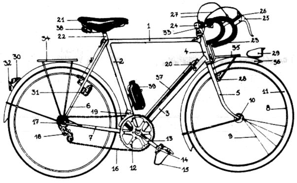
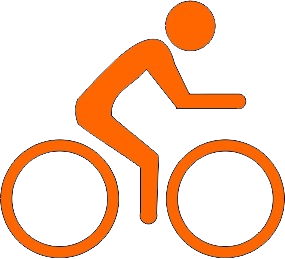
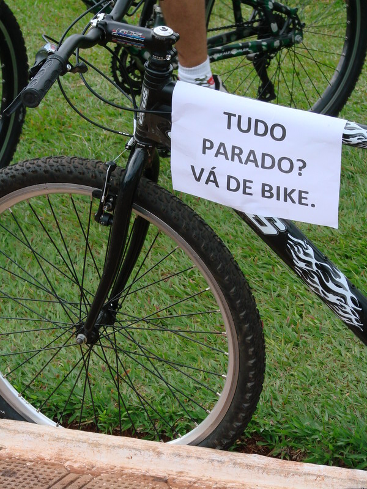
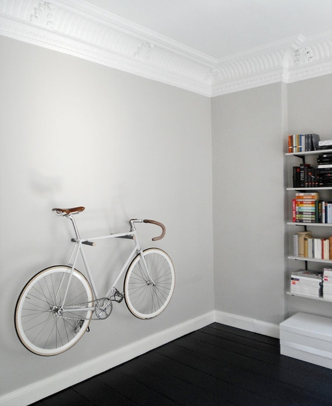
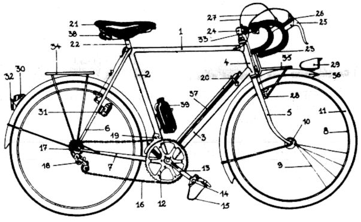
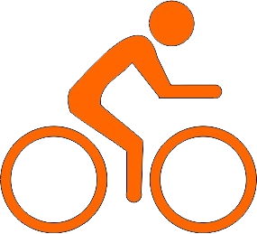
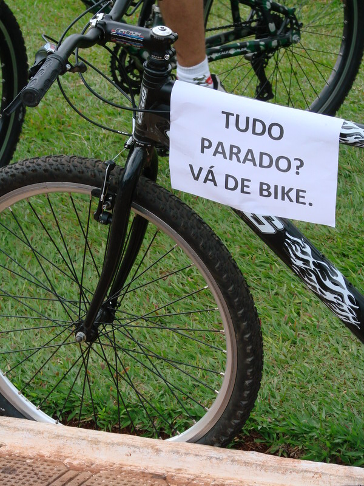
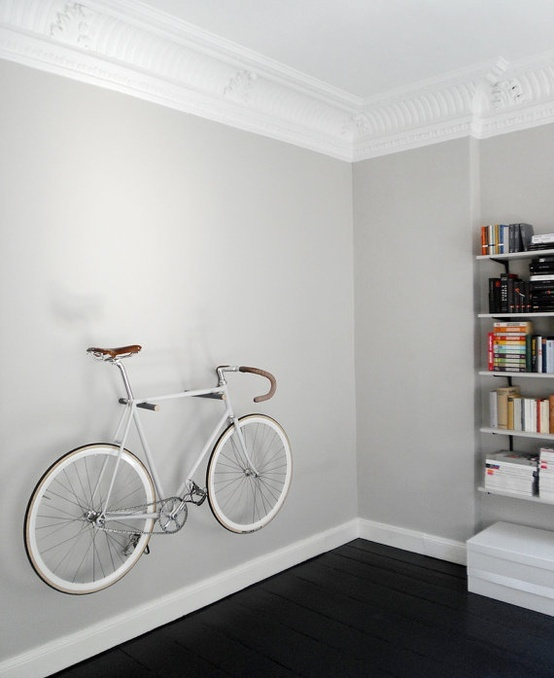
 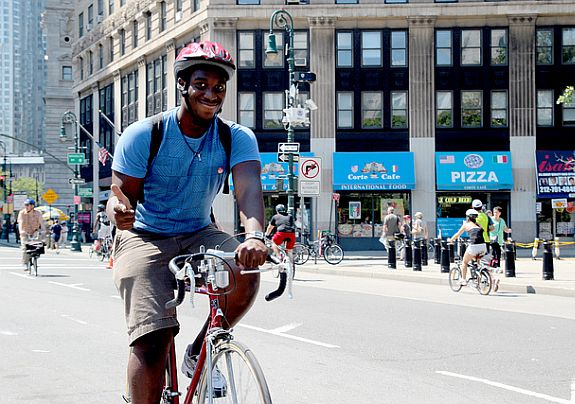
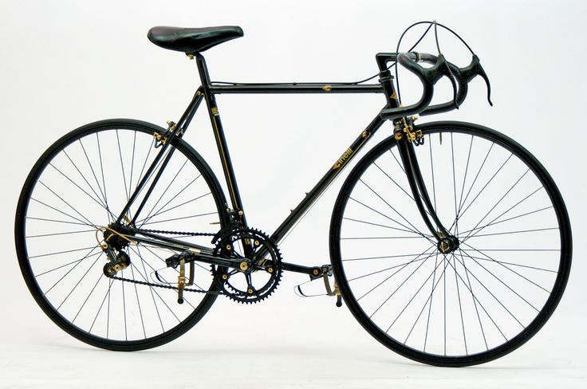
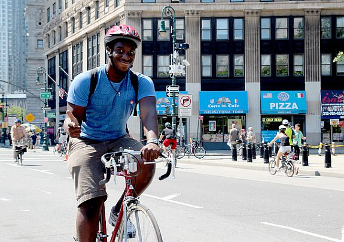
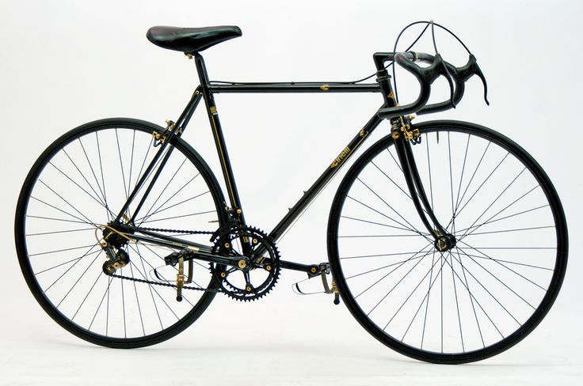
 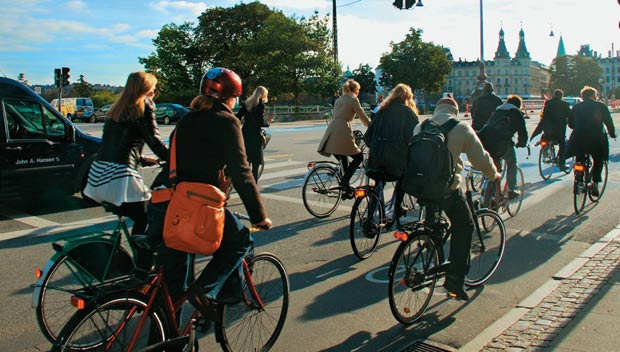
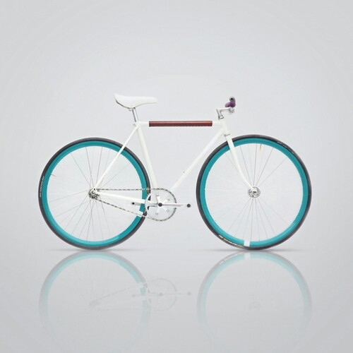
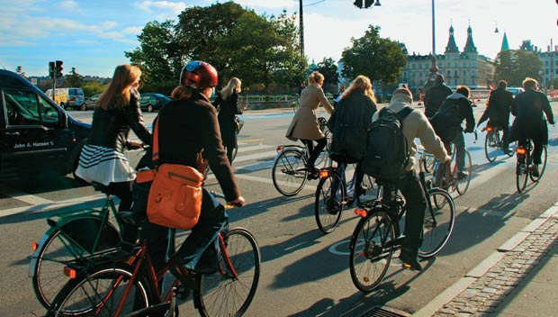
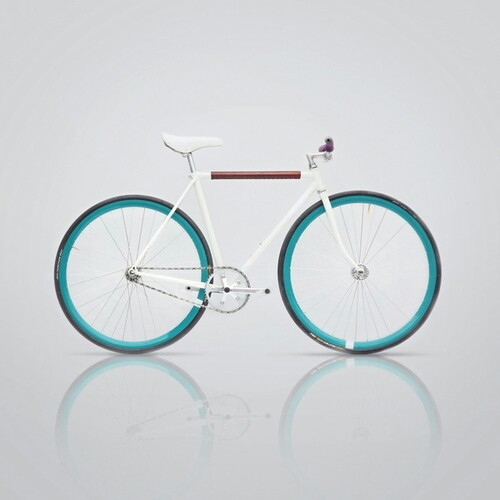
 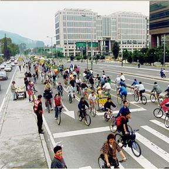
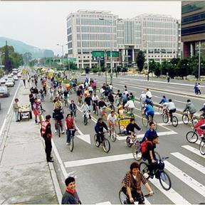